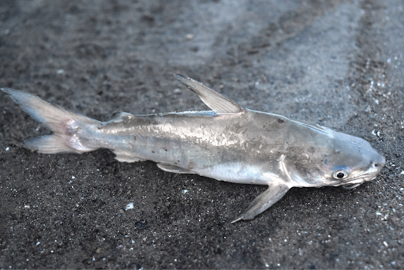

The Pasig River in the 1930s. / Photo by John Tewell
Historically, the Pasig River connected Manila Bay and Laguna de Bay, acting as a lifeline for the city. During the pre-colonial and Spanish colonial eras, it served as a center for trade and transportation. Due to the river's wealth, communities flourished along its banks. The river was rich in biodiversity, with fish and indigenous plants that provided for the livelihoods of the local populace. The river also had a cultural significance; it was frequently depicted as a symbol of life and connection in Filipino literature and history.
The Pasig River has historically played a crucial role in the lives of the residents along its banks. Here's how it has helped them over time:
Historical Role in Trade and Commerce
- Served as a major transportation route during the Spanish colonial period and earlier.
- Connected Manila Bay and Laguna de Bay, facilitating trade and commerce.
Before the Pasig River in Manila, Philippines was declared biologically dead in
1990, it was home to many species of plants and animals, including:
1 / 5
Scyphiphora hydrophylacea mangrove
The Scyphiphora hydrophylacea mangrove species was
once abundant along the river. Other mangrove species
found in the area include the Saging-Saging, Api-Api,
Bungalon, Nipa Palm, Bakauan Babae, and Pagatpat.
2 / 5
Rotifer
A 2009 study recorded the presence of many rotifer species in the river.
3 / 5
Copepod
The ciliate Vorticella and the euglenoid Colacium were found on
copepods in the river.
4 / 5

Kanduli (Manila Sea Catfish)
The kanduli (Arius manillensis) is a native fish species
endemic to Luzon. It thrived in the freshwater and brackish habitats
of the Pasig River and Laguna de Bay. Kanduli played an essential
role in local fishing practices.
5 / 5
Biya (Goby)
Native goby species inhabited the Pasig River's clean waters,
providing a sustainable food source for communities along its
banks. These fish are now rare due to habitat degradation.
Fun Fact: The name Manila is derived from the
term "Maynila", which comes from the Tagalog words
"may" (meaning "there is") and "nilad", which refers
to a type of flowering mangrove plant (Scyphiphora
hydrophyllacea) that once thrived along the shores
of Manila Bay.
It is crucial to highlight the Pasig River's historical species for an array of reasons.
Recognizing Biodiversity Loss: By analyzing their reduction, we can gain a better understanding of how pollution, industrialization, and urbanization affect regional biodiversity.
Cultural and Historical Significance: Many of these species were important to the customs and means of subsistence of the riverbank people. Emphasizing them promotes cultural memory preservation and the importance of reestablishing a connection with Manila's natural heritage.
Policy and Development Implications: Historical viewpoints offer a prism through which to evaluate ongoing and upcoming development initiatives, such as PAREX. They encourage people to consider how environmental preservation and urbanization may coexist.
Goals for Ecosystem Restoration: Restoring species that were once abundant in the Pasig River can be used as a standard for effective restoration. By learning about the past abundance of species like kanduli, people can envision what a rehabilitated Pasig River might look like. Historical context gives clarity to what "restoration" truly means.
Education and Advocacy: Public awareness and participation in environmental conservation can be stimulated by showcasing these species. It draws attention to what has been lost and explains why initiatives like the Pasig River Rehabilitation Commission (PRRC) are so important.
The river was once a part of Manila's lively urban life, where people used it for
fishing and bathing in the early 1900s. However, as the city grew in population
and the river became used to the informal sector, there was a noticeable decline
in both commercial and personal activities in the river, which was equal to a
decline in fish migration and reproduction.
The river's activities continued to deteriorate until 1970, at which point its water
quality began to fall below the Class "C" level, meaning that it was unsuitable for
any river activities, could no longer sustain aquatic life other than janitor fish
and water lilies, and was only suited for irrigation.
After several attempts by the government and private sectors to rehabilitate
the Pasig River, the vision of its restoration became clear when a citizen
caught a freshwater tilapia in Sta. Ana, Manila. This served as proof of
the river’s improvement.
A study from the Department of Environment and Natural Resources, alongside
the Ecosystems Research and Development Bureau, highlighted the presence
of tilapia and seven other fish species—such as Manila sea catfish, bighead
carp, and Indo-Pacific tarpon—living in the Pasig River since 2009. In addition
to these fish, various species of aquatic plants, birds, trees, and other
vegetation were also found thriving in this once-polluted river.
PAREX as the “Pasig River’s death sentence”
The Pasig Expressway (PAREX), proposed by San Miguel Corporation Infrastructure,
is designed to be a 19.37-kilometer, six-lane elevated expressway running the
entire stretch of the Pasig River. It aims to provide a faster route connecting
Metro Manila’s major business districts, such as Makati, Ortigas, and Bonifacio Global City.
Reducing traffic congestion and drastically reducing travel times throughout
Metro Manila is the project's primary objective. Its secondary goal is to
assist with the Pasig River's cleanup and rehabilitation. Lastly, it could
work alongside the ferry boats operating on the Pasig River.
It may showcase itself to help alleviate the Manila traffic, but
some who oppose call the PAREX as the “Pasig River’s death sentence,”
as it will worsen and not solve traffic congestion. Aside from it being
car centric, it will cause environmental issues such as killing of the
Pasig River and heritage erasure.
According to one of the petitions, the efforts made to restore the Pasig River
will be in vain and will not take into account the demands of the next generation
of the residents. Additionally, causing transport above the Pasig River will
increase non-exhaust emissions like road dust, particulate matter, and microplastics
from car tires, which will contaminate our rivers, streams, and oceans.
La Vina, Antonio G. M., & Reyes, J. M. (2022). Maladaptation, loss and damage, and the built environment: limits and possibilities. Ateneo Law Journal, 67(2), 377-410.
{kind=link}